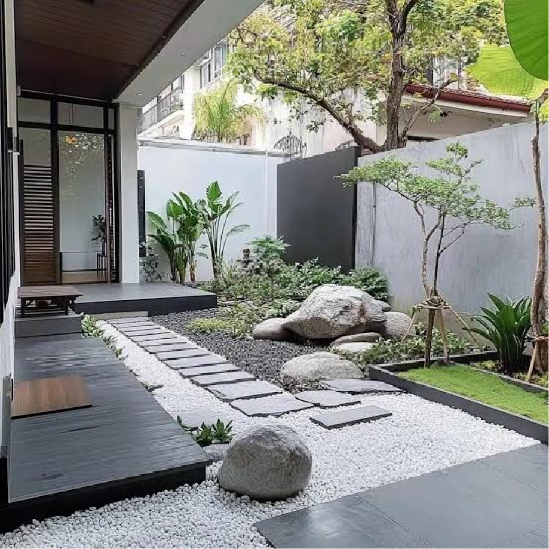

Sobre
O Verde Lar Paisagismo nasceu em 2010, da visão de Felipe em transformar espaços ao ar livre em áreas verdes agradáveis. Desenvolvemos projetos personalizados de paisagismo para residências, empresas e condomínios que querem embelezar e valorizar seus ambientes externos.
Serviços
Paisagismo
residencial

Manutenção
de jardins

Construção de
áreas verdes

Consultoria em
paisagismo
Projetos

Jardim residencial —
Casa Alameda das Flores

Área verde corporativa —
Grupo Nova Empresa

Paisagismo de condomínio —
Condomínio Vista Verde
"Depois que o Verde Lar Paisagismo cuidou do meu quintal, ele virou meu lugar favorito da casa."
— Mariana S., moradora do Condomínio Vista Verde